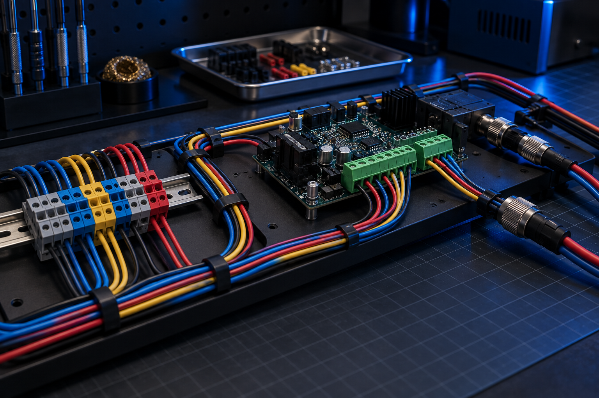

The Beginning
Learn the tools, class process, communication methods, and basic web concepts.
REMOTE PARTICIPATION PROPOSAL
This pathway keeps the same assignments and learning outcomes. It replaces the in-person Action Session with documented work, communication, and instructor verification.
Goal: Continue learning and contributing without lowering course expectations.
See the weekly processCOURSE ROADMAP
The remote pathway follows the course’s existing stages.
Learn the tools, class process, communication methods, and basic web concepts.
Use structure, writing, HTML, and visual choices to communicate an idea.
Build useful interactions and connect HTML, CSS, and JavaScript.
Apply course concepts to rules, player choices, feedback, and a finished experience.

BUILD · TEST · DOCUMENT
Each project would connect technical practice with clear documentation, showing both the finished result and how I reached it.
INTERACTIVE 3D
This Babylon.js scene represents hands-on access to computing—even when participation happens remotely.
Drag the model to rotate it. Use the mouse wheel or trackpad to zoom.
WEEKLY WORKFLOW
EVIDENCE OF PARTICIPATION
Each week would create a record that the instructor can review.
Meaningful commits showing when and how the project changed.
A tested repository link with readable files and a short README.
A brief explanation of the goal, process, problems, and result.
Questions, progress updates, and responses through Canvas, Discord, or email.
Visual checkpoints showing completed stages and testing.
A short live or recorded explanation when the instructor needs confirmation.
EXAMPLE WEEK
Select a step to see what I would complete and submit.
STEP 1 OF 5
Read the assignment, identify the required concepts, and list any questions before beginning.
Evidence: A short checklist of requirements and questions.
Deadlines, assignment standards, learning outcomes, instructor feedback, and academic integrity would remain unchanged.
The change is how participation is documented when physical attendance is not possible.